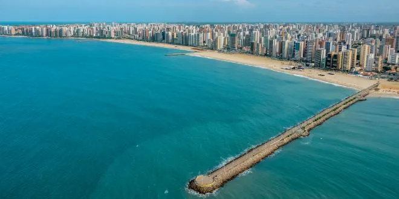

O Ceará é um estado localizado na região Nordeste do Brasil, conhecido por suas praias deslumbrantes, como Jericoacoara, Canoa Quebrada e Fortaleza, que é sua capital. Fortaleza é uma cidade vibrante, cheia de vida, com uma orla linda, uma cultura rica e uma gastronomia deliciosa, destacando pratos como a carne de sol, a tapioca e frutos do mar. O Ceará também é famoso por suas dunas, lagoas e paisagens únicas, especialmente na região de Jericoacoara, que é um destino muito procurado por turistas que buscam beleza natural e tranquilidade. Além disso, o estado tem uma forte tradição cultural, com festas populares, música e dança típicas, como o forró. É um lugar perfeito para quem gosta de sol, mar, natureza e cultura animada!
